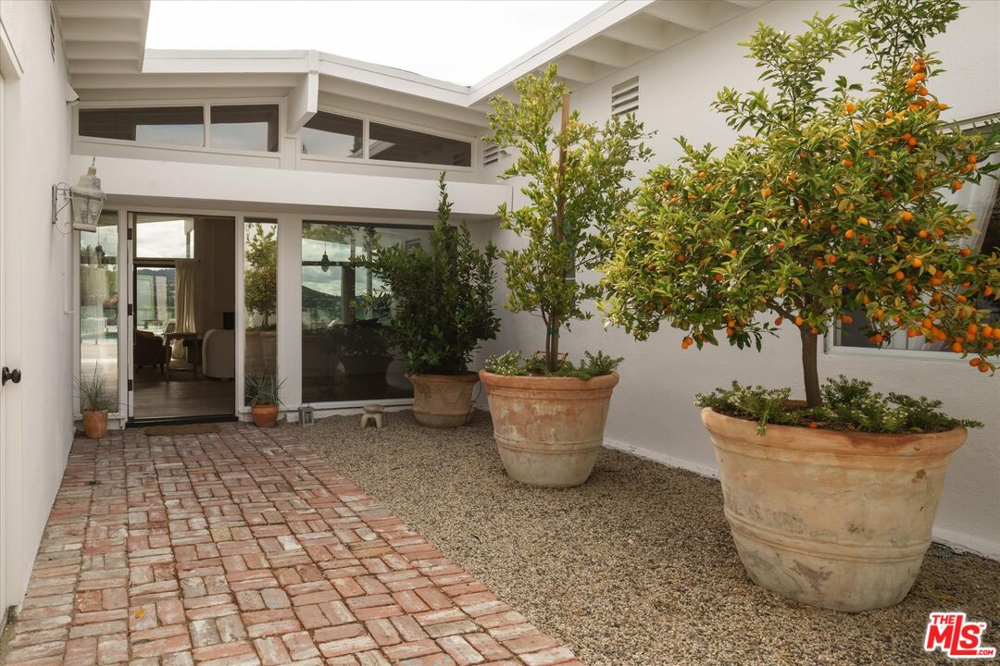
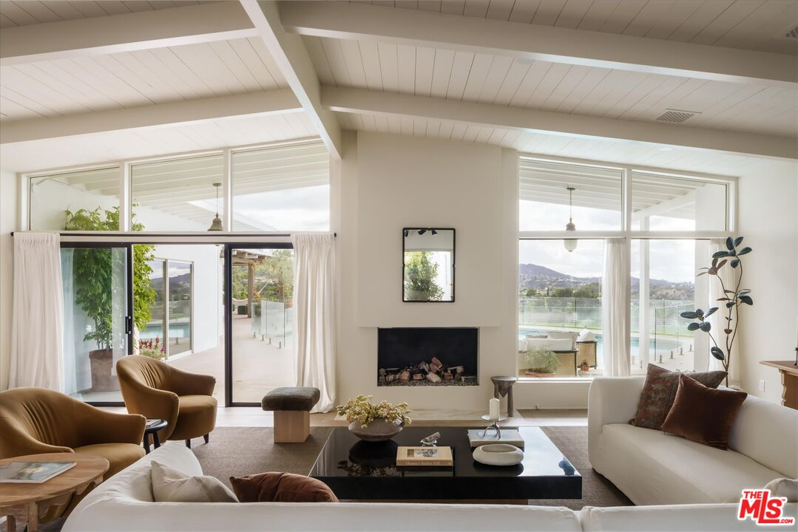

Obsession No. 003Sherman Oaks
3627
Cody Rd
Every room here seems to be arguing over which view is better, the canyon from the living room or the sunset from the primary suite’s own balcony.
Why it made the edit
“The kitchen is anchored by a baby blue LaCanche range that I would build an entire dinner party around.”
This one made the list because of the citrus tree by the front door, planted in an oversized terracotta pot in the private atrium entry, so heavy with fruit it looks almost staged, except nothing here was staged, it was restored.
Richard Dorman designed it in 1956 for the Modern Trend Construction Company, one of the architects who defined Southern California post-and-beam design, and you feel it the second you walk through that gated atrium into vaulted wood ceilings and walls of glass that open the whole place up to a canyon view that just keeps going.
It sits on nearly an acre north of Mulholland, on the cusp of Bel Air and Sherman Oaks, and it’s been reimagined down to the studs, new roof, new electrical, all new plumbing, owned Tesla solar, while keeping the bones exactly as intentional as they were in 1956.
The kitchen is anchored by a baby blue LaCanche range that I would build an entire dinner party around, terrazzo tile inspired by the original terrazzo they uncovered during the restoration, and the primary suite steps out to its own private balcony over the canyon like that’s just a normal thing to have.
Outside, it’s basically a private resort, pool, fire pit, a covered outdoor kitchen, fruit trees, raised garden beds, and a powder room wallpapered in Gucci that I think about more than I’d like to admit. If a 1956 post-and-beam with a citrus tree at the door and a Gucci powder room sounds like your kind of house, let’s talk.


Want to see it in person?
Curious about this one?
Let’s talk.
Listed by Sherri Rogers, Compass. House of Zonshine does not represent this listing. Property details are from listing information and public sources and should be independently verified.